These demonstrations exist to help engineers and security researchers detect, prevent, and remediate unauthenticated CTR mode misuse. Each demonstration executes against a self-contained, in-memory oracle. Every vulnerability is paired directly with its cryptographic mitigation. Do not test these techniques against systems you do not own or are not explicitly authorized to evaluate.
The mechanism
NIST defines Counter mode in SP 800-38A §6.5. A counter generation function produces a sequence of distinct 128-bit blocks T₁, T₂, …, Tₙ (typically constructed as Nonce ∥ Counter). Each counter block is encrypted with the block cipher under key K to produce keystream blocks Sᵢ = E_K(Tᵢ). The ciphertext is produced by XORing plaintext with the keystream: Cᵢ = Pᵢ ⊕ Sᵢ. Decryption performs the exact same operation: Pᵢ = Cᵢ ⊕ Sᵢ.
Unlike ECB or CBC, CTR mode requires no padding: the keystream is truncated to the exact byte length of the plaintext. While this enables high performance, random access, and parallel processing, it inherits the fundamental vulnerabilities of synchronous stream ciphers when used without an authentication tag.

Three root causes, four attack vectors
All CTR mode vulnerabilities trace back to three fundamental root causes:
- Stream-Cipher Malleability: Bitwise XOR has no error diffusion. Modifying ciphertext bit
ialters decrypted plaintext bitiwithout corrupting adjacent bytes. - Keystream Determinism: Under a fixed key, a given counter block
Talways produces the exact same keystream blockS. Reusing a nonce reproduces the keystream. - Absence of Integrity / Authentication: Ciphertexts contain no authentication tag or MAC. Tampered or spliced ciphertexts decrypt cleanly without error.

Vector 1 — Precision bit-flipping / privilege escalation
Because encryption is C = P ⊕ S, decryption calculates P' = C' ⊕ S. If an attacker injects a differential Δ into the ciphertext at offset k (C' = C ⊕ Δ), the server decrypts P' = (C ⊕ Δ) ⊕ S = (P ⊕ S ⊕ Δ) ⊕ S = P ⊕ Δ. An attacker who knows or predicts a target field (such as role=user or transfer_amount=000100) can flip specific bits to forge role=root or transfer_amount=999999. There is zero avalanche effect and zero decryption error (Cryptopals Set 4 Challenge 26).

Precision token bit-flipping playground
The service issues encrypted tokens for user accounts (email=...&uid=1000&role=user). You never see the AES key.
Vector 2 — Keystream reuse / two-time pad & crib-dragging
If two distinct messages are encrypted under the same key and initial counter block: C₁ = P₁ ⊕ S and C₂ = P₂ ⊕ S. XORing both ciphertexts completely removes the keystream: C₁ ⊕ C₂ = (P₁ ⊕ S) ⊕ (P₂ ⊕ S) = P₁ ⊕ P₂. The secret key has zero influence on this result (Cryptopals Set 3 Challenges 19 & 20).
This enables two powerful attacks without ever breaking AES:
- Known-Plaintext Recovery: If any part of
P₁is known (e.g. standard headers, XML/JSON tags, fixed prefixes), the corresponding bytes ofP₂are computed instantly:P₂ = (C₁ ⊕ C₂) ⊕ P₁. - Statistical Crib-Dragging: An attacker guesses common words ("the", "TRANSFER", "HTTP/1.1") and drags them across
C₁ ⊕ C₂. When readable natural language appears, both plaintexts are simultaneously revealed.

Two-time pad keystream cancellation & crib dragging
Vector 3 — Random-access read/write keystream extraction
Many systems expose seekable or editable encrypted stores (such as disk image storage, encrypted databases, or collaborative document APIs) offering an edit(ciphertext, offset, new_text) endpoint. In unauthenticated CTR mode, an attacker can overwrite the ciphertext with all-zero bytes (0x00). Because 0x00 ⊕ S = S, the ciphertext returned by the server is the raw keystream itself. XORing this extracted keystream with the original ciphertext instantly recovers 100% of the secret plaintext in a single request (Cryptopals Set 4 Challenge 25).
Document editor keystream extraction oracle
Extracted Raw Keystream (hex): [Awaiting extraction]
Recovered Plaintext: [Awaiting extraction]
Vector 4 — Counter rollover & keystream collisions
In CTR mode, the counter block is divided into a fixed Nonce and an integer counter field of length L bits. When encrypting long data streams or high-volume network packets without rekeying, the counter reaches 2ᴸ − 1 and rolls over modulo 2ᴸ. This causes the block cipher to encrypt previously used counter blocks, generating duplicate keystreams within the exact same session or connection. NIST SP 800-38A §6.5 explicitly mandates that counter blocks must remain unique across all invocations under the same key.
Counter rollover & collision simulator
Detecting unauthenticated CTR
Detecting CTR vulnerabilities requires both passive/black-box testing and static code analysis:
- Black-box (Malleability & Nonce Reuse Testing):
- Test for malleability: flip a single non-essential bit in ciphertext (e.g. whitespace or timestamp byte) and observe if the server accepts it without raising an authentication error.
- Test for nonce reuse: send two identical plaintext payloads. If the returned ciphertexts are byte-identical across separate requests, the system is reusing nonces.
- White-box (Source Code Review):
- Grep for raw CTR modes:
MODE_CTR,modes.CTR(,/CTR/, orAES/CTR/NoPadding. - Check whether decryption verifies a MAC: if
cipher.decrypt()is called without a preceding constant-time HMAC check or AEAD tag verification, the implementation is vulnerable. - Inspect counter initialization: look for hardcoded IVs/nonces (e.g.
iv = b'\x00' * 16), missing IV increments, or static counter prefixes.
- Grep for raw CTR modes:
The defensive fix — AEAD & Encrypt-then-MAC
The standard cryptographic solution is to replace raw CTR with Authenticated Encryption with Associated Data (AEAD):
- AES-GCM (NIST SP 800-38D): Combines CTR keystream encryption with Galois Message Authentication Code (GMAC) into a single atomic primitive.
- ChaCha20-Poly1305 (RFC 8439): High-speed stream cipher paired with Poly1305 authenticator.
- Encrypt-then-MAC (AES-CTR + HMAC-SHA256): If AEAD is unavailable, compute HMAC over
Nonce ∥ Ciphertextand verify it in constant time before calling decryption.
Defensive control verification (tamper rejection)
Re-issue the token under AES-GCM or Encrypt-then-MAC and attempt to tamper 1 bit.
Real-world evidence
| Case / Vulnerability | What happened | Vector |
|---|---|---|
| KRACK Attack, 2017 (CVE-2017-13077) | WPA2 4-way handshake vulnerability forced Wi-Fi clients to reinstall an in-use session key and reset packet counters in AES-CCM/GCMP. The resulting nonce reuse allowed attackers to replay, decrypt, and forge network traffic (Vanhoef & Piessens, ACM CCS 2017). | Vector 2 & 4 |
| Mega.nz Flaw, 2022 (CVE-2022-37450) | Mega used AES-128-CTR with unauthenticated file chunks and weak key derivation. Active bit-flipping malleability allowed attackers to modify stored file contents and escalate account privileges without detection (Lennox-Errand et al., ETH Zurich, 2022). | Vector 1 |
| MS Word Document Encryption, 2005 (CVE-2005-0416) | Microsoft Office 2002/2003 encrypted document revisions with a static key and zero IV. Re-saving or revising documents produced keystream reuse, allowing differential two-time pad recovery of document content (Hongjun Wu, FSE 2005). | Vector 2 |
| Shadowsocks Stream Ciphers, 2019 (CVE-2019-14888) | Unauthenticated stream ciphers (AES-CTR, ChaCha20) allowed active bit-flipping attacks against proxy packet headers, redirecting traffic to attacker servers and recovering plaintext. Deprecated in Shadowsocks SIP004 in favor of AEAD. | Vector 1 |
Residual risk after switching to GCM
While AES-GCM eliminates malleability and detects tampering, it introduces a severe failure mode if nonces are ever repeated: reusing a (Key, Nonce) pair in GCM destroys confidentiality and allows recovery of the GHASH authentication key, enabling arbitrary forgery (Böck et al., USENIX WOOT 2016).
NIST SP 800-38D §8 requires that nonces be unique per key. For 96-bit random nonces generated via an approved RBG (§8.2.2), §8.3 places an invocation ceiling of at most 232 encryptions under any single key to bound collision probability below 2−32.
Unauthenticated CTR mode fails because bitwise XOR encryption is completely malleable and keystreams are deterministic. Modifying ciphertext predictably modifies decrypted plaintext with zero error spread, and reusing nonces destroys confidentiality. The defensive fix is authenticated encryption (AES-GCM or Encrypt-then-MAC) with strict per-key nonce uniqueness.
Primary references
- NIST SP 800-38A §6.5 — Recommendation for Block Cipher Modes of Operation: Methods and Techniques (CTR Mode definition and uniqueness requirement).
- NIST SP 800-38D §8 — Recommendation for Block Cipher Modes of Operation: Galois/Counter Mode (GCM) (IV uniqueness bounds and invocation limits).
- RFC 3686 — Using Advanced Encryption Standard (AES) Counter Mode With IPsec Encapsulating Security Payload (ESP).
- RFC 8439 — ChaCha20 and Poly1305 for IETF Protocols.
- Cryptopals Crypto Challenges — Set 3 (Challenges 19 & 20: Break fixed-nonce CTR mode) and Set 4 (Challenges 25 & 26: Random access read/write CTR and CTR bitflipping).
- Vanhoef & Piessens, ACM CCS 2017 — Key Reinstallation Attacks: Forcing Nonce Reuse in WPA2.
- Lennox-Errand, Paterson, & Vaudenay, ETH Zurich 2022 — Cryptanalysis of MEGA's Cloud Storage.